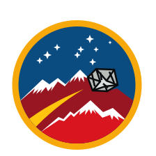

0
0
0
MODO SIMULACIÓN — no son aeronaves reales

ADS-B · Orange Pi Zero LTS · STM32L476RG · SX1262
Comparte este Pico con otros PCs de tu red local.
Consulta el puerto con py ground_station/radar_stm32.py --list-ports y la IPv4 con ipconfig.
Ejecuta este comando en PowerShell desde la carpeta del repositorio. Cuando la terminal muestre la URL y la clave temporal, abre el panel y comparte esa dirección.
Abrir panel LANOrientación 3D, acelerómetro, giroscopio y magnetómetro recibidos a través del Pico LoRa P2P.
Cuaterniones: — · Norma: —
El modelo solo se mueve con cuaterniones reales; sin datos permanece en pose neutral.
Heading magnético horizontal aproximado: —
Magnetómetro · Estado sin datos
Esperando telemetría de sensores
BMP280 · Presión: — · Temperatura: —
Acelerómetro: mg · Giro: centi°/s · Magnetómetro: décimas de µT. Brújula sin compensación de inclinación.
Aún no hay paquetes recibidos.
Comandos USB → Pico → LoRa P2P → STM32. La transmisión no implica que se haya aplicado la orden.
Magnetómetro · Estado sin datos
Esperando telemetría de sensores
Brújula: — · Norma: —
No disponible: conecta el Pico y espera PICO_READY,P2P_CMD_V1.
Salida del relé: Sin confirmación
Al arrancar, el STM32 recupera la calibración guardada o espera a que el CubeSat esté quieto para calibrar el giroscopio. Activa 9DOF cuando hay calibración magnética y lecturas válidas.
Última orden: —
Sin actividad del Pico.
Historial de este navegador. La captura funciona mientras la estación está abierta.
Control de giro del CubeSat 3U suspendido
Esperando fotodiodos.
Valores ADC del Nano recibidos por UART4.
Esperando telemetría de la rueda
Esperando el estado de la rueda.
Cuando los jueces suelten el CubeSat, pulsa Frenar giro manual. El resultado aparece en el estado y en los gráficos de frenado.
Eje y polaridad fijos en Z+.
Esperando telemetría de la rueda.
Puedes girar el CubeSat a mano y pulsar Frenar, o usar Encender y después Frenar. La STM32 mide el giro durante el primer segundo y luego corrige. El reposo se confirma tras 10 s con velocidad y aceleración angular cerca de cero. Desarmar ESC termina la corrección.
Esperando telemetría de la rueda.
Velocidad angular Z (°/s) · referencia cero
PWM del ESC (µs) · referencia neutra de 1500 µs
Sin órdenes de rueda
Esperando datos del GY‑91
100 kΩ entre PA0 y GND, en paralelo con el fotodiodo. Tapa e ilumina el sensor para comparar la lectura.
Esperando voltajes por LoRa.
Estado de carga no medido. Requiere lectura de corriente o señal del EPS.
Última muestra · —
Esperando telemetría solar
Series reales recibidas desde el Raspberry Pi Pico. No se generan valores cuando faltan muestras.
Los indicadores representan el último paquete de radio recibido.